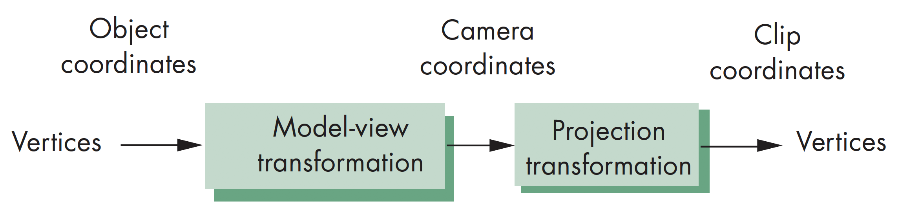
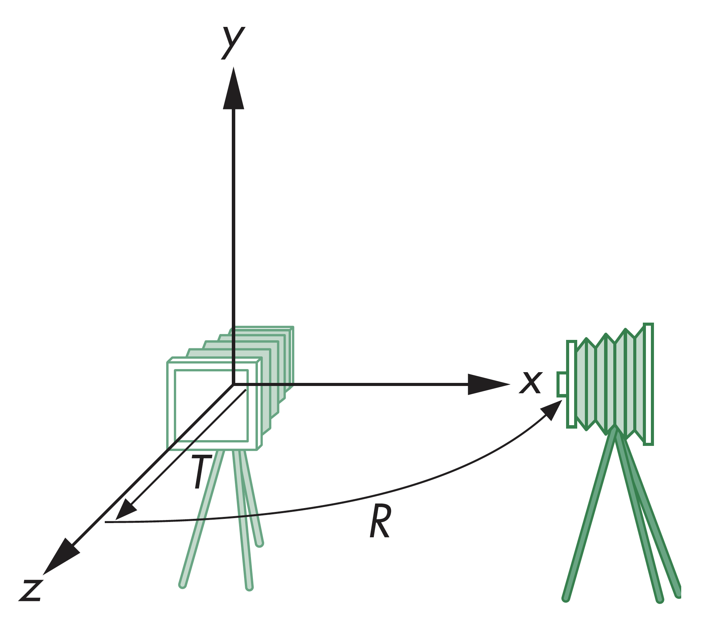
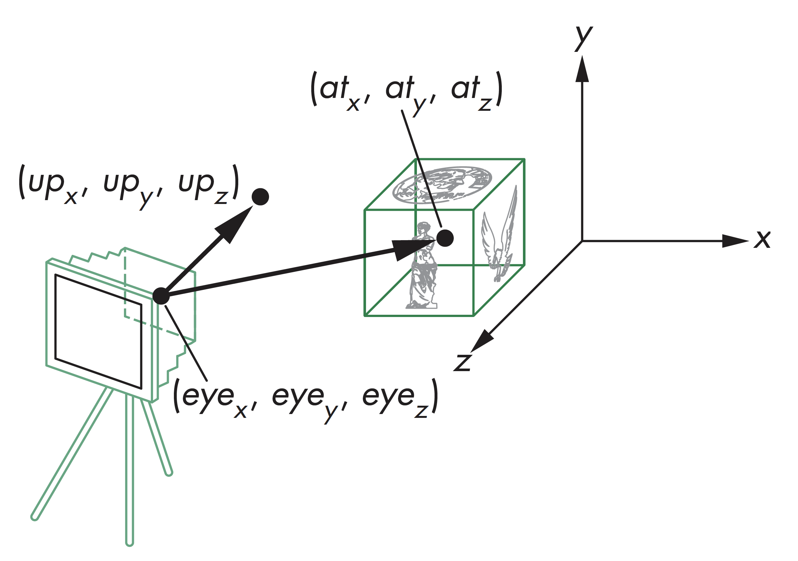

计算机图形学
第五章 成像
相机
相机
计算机成像
管线中处理计算机成像的三方面内容：
- 相机定位，设置模型视图矩阵(Model-view matrix)
- 选定镜头，设置投影矩阵，正投影or透视投影
- 裁剪，设定有效成像空间(Viewing volume)
相机
WebGL相机
WebGL中，物体和相机的初始状态是一样的，即模型视图矩阵初始为单位矩阵
相机初始位置位于原点，指向Z轴负方向，初始成像空间为以原点为中心边长为2的立方体

相机
移动相机
如果想同时看到Z轴正方向和负方向的内容
方法一：沿Z轴正方向移动相机，改变相机坐标
方法二：沿Z轴负方向移动物体，改变物体坐标
两者的成像结果是等价的，对应于模型视图矩阵的改变：
平移: translate(0, 0, -d)(d>0)

相机
任意移动相机
可以任意旋转和平移顺序移动相机，如让相机从侧边成像，有
- 旋转相机
- 向后移动相机
对应的模型视图矩阵为:C=TR

相机
WebGL代码
var t=translate(0.0, 0.0, -d);
var ry = rotateY(-90.0);
var m = mult(t, ry);
// 以上代码等价于
var m=mult(translate(0.0, 0.0, -d), rotateY(-90.0));
相机
LoookAt函数
lookAt(eye, at, up)
相机
LookAt示例
如生成边与各坐标轴平行的立方体等轴测视图，有
var eye=vec3(1.0, 1.0, 1.0);
var at=vec3(0.0, 0.0, 0.0);
var up=vec3(0.0, 1.0, 0.0);
var mv=lookAt((eye, at, up);